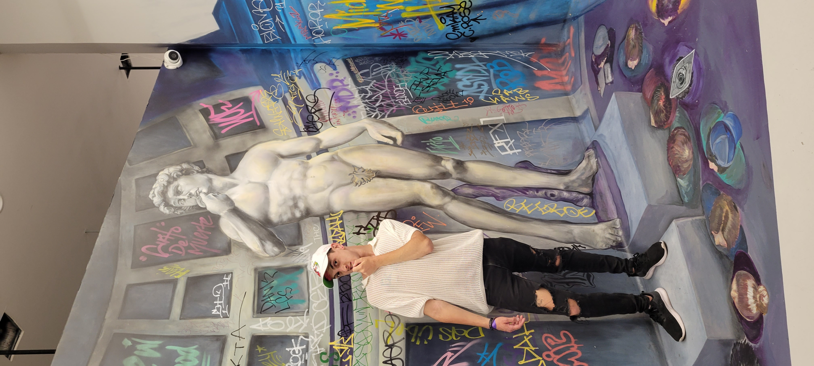

Bennnnnnn! I did it!!! And you helped me every step of the way. Every frustrating night trying to fix my schedule, every wild project idea, every switch-up—it all paid off. And for that alone, take a bow. Hear the applause. Know your impact. When I first declared my major, I'll admit I wasn't sure about you as my advisor. But over time, I saw who you really are: funny, generous, kind to every single person who walks into that lab, and dripping in aesthetic. You helped me work, go to school, and somehow hold onto a shred of mental stability. That flexibility? It kept me in school. I don't know how to explain how important that was for me. And one more thing—you are the only professor who ever asked me about my life before Whitworth. You actually wanted to understand why I am the way I am. That mattered more than you probably know. On a campus where I've always felt like the odd one out, you saw me. You were honest, gave feedback, asked questions, and helped me feel like I belonged. It does make me a little sad that we didn't get to have that heart-to-heart sooner, but I'm beyond grateful we had it before I left. I'd love to stay in touch—maybe get coffee or a drink sometime? Thank you. From the bottom of my heart.
